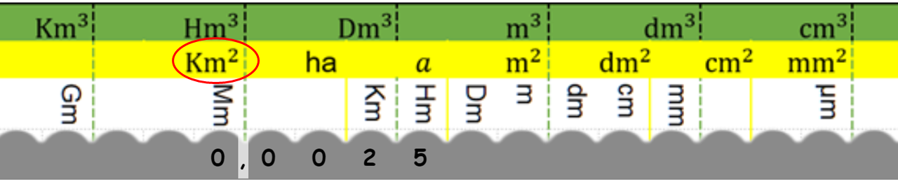

¡Solución Innovadora para la Conversión de Unidades de Medida!
La conversión de unidades en el Sistema Internacional (SI) ha sido un desafío persistente, afectando tanto a estudiantes como a profesionales en diversos campos. La complejidad de este proceso ha generado dificultades en su comprensión y ejecución, lo que se refleja en estudios académicos y experiencias prácticas. Ante esta problemática, se propuso la creación de una solución efectiva y eficiente: el Maßeinheitenumwandlung und Lineal (MUL), diseñado para simplificar la conversión de unidades de manera rápida y precisa.
Problema Identificado:
Estudios realizados por diversos autores, como Schröder (2014), Lassnitzer y Gaidoschik (2019), y Dinçer y Osmanoglu (2018), han destacado las dificultades experimentadas por estudiantes y profesionales al realizar conversiones de unidades dentro del Sistema Internacional (SI). Estas dificultades se han traducido en errores en cálculos y en la comprensión incompleta de los conceptos de conversión, lo que ha afectado negativamente a los resultados académicos y profesionales. La falta de herramientas efectivas y accesibles para abordar esta problemática ha agravado la situación, generando la necesidad de una solución innovadora.
Creación de MUL:
En respuesta a esta problemática, el Ing. Mauricio Mora, MSc., desarrolló el Maßeinheitenumwandlung und Lineal (MUL) en el año 2023. Inspirado en principios de Design Thinking y Lean Thinking, el desarrollo de MUL se centró en comprender las necesidades de los usuarios y en diseñar una herramienta intuitiva y práctica para la conversión de unidades de medida. El proceso de desarrollo de MUL incluyó la identificación de los problemas clave asociados con la conversión de unidades, la generación de ideas para abordar estos problemas, la creación de prototipos y pruebas iterativas para refinar la funcionalidad y la usabilidad de la herramienta.
Pruebas y Validación:
Para validar la efectividad de MUL, se llevaron a cabo extensas pruebas con diferentes versiones del prototipo. Estas pruebas implicaron la participación de usuarios reales, tanto estudiantes como profesionales, quienes realizaron conversiones de unidades utilizando MUL en situaciones de la vida real. El feedback recopilado durante estas pruebas fue fundamental para perfeccionar el diseño y la funcionalidad de MUL, garantizando su utilidad y facilidad de uso en diversas aplicaciones y contextos.
Ejemplo de Conversión de Unidades:
Para comprender mejor la utilidad de MUL, consideremos un ejemplo de conversión de unidades utilizando el método tradicional y comparémoslo con el método simplificado proporcionado por MUL.
Método Tradicional:
Supongamos que queremos convertir 0.0025 kilómetros cuadrados a milímetros cuadrados utilizando el método tradicional.
1. Busca en libros de referencia o en internet la tabla 'factores de conversión de unidades de área'. Encuentra una tabla de conversión o información relevante.
< br>
2. Interpreta los datos de la tabla para determinar si debes realizar una división o una multiplicación. En este ejemplo, debes realizar una multiplicación.
3. Calcula el factor de conversión, en este caso, de kilómetros cuadrados a milímetros cuadrados. Dado que la tabla generalmente tiene como punto de referencia los metros cuadrados, necesitas dos factores que debes multiplicar: el primero de km² a m² y el segundo de m² a mm². Esto implica multiplicar el número de kilómetros cuadrados que tienes por 1,000,000 (para convertir a metros cuadrados) y luego por 1,000,000 nuevamente (para convertir a milímetros cuadrados).
4. Define la ecuación para la conversión. La ecuación para convertir kilómetros cuadrados a milímetros cuadrados es:
f(0,0025)=0,0025×(1.000.000)² = 0,0025×1.000.000.000.000
5. Realiza la operación para obtener el resultado, que en este ejemplo es 2,500,000,000 mm².
Es importante tener en cuenta que la cantidad de energía requerida para realizar una conversión de unidades de medida puede variar dependiendo de varios factores, como la complejidad de la conversión, la familiaridad con los conceptos involucrados y la precisión requerida en los cálculos. En general, realizar cálculos mentales, especialmente aquellos que implican operaciones como multiplicación o división, puede requerir un esfuerzo cognitivo significativo.
Cuando realizamos conversiones de unidades de medida, nuestro cerebro necesita concentrarse en varias tareas al mismo tiempo, como recordar las reglas de conversión, aplicar las operaciones matemáticas adecuadas y mantener la precisión en los cálculos. Esto puede requerir una cantidad considerable de energía mental, especialmente si la conversión es compleja o si no estamos familiarizados con los conceptos involucrados.
El grado de energía requerida puede variar de persona a persona y también puede depender del nivel de fatiga mental, el nivel de concentración y otros factores individuales. En general, mientras más complicada sea la conversión y más precisión se requiera, es probable que se necesite más energía mental para llevarla a cabo de manera efectiva y precisa.
Método MUL:
Ahora, veamos cómo MUL simplifica este proceso en solo tres pasos:
1. Escribimos el número 0,0025 en MUL, asegurándonos de que la coma coincida con la unidad correspondiente.

2. Buscamos la unidad final deseada, que en este caso es kilómetros cuadrados, en MUL.
3. Desplazamos la coma a la posición final y, si es necesario, rellenamos las celdas vacías con ceros.
Ventajas de MUL:
Simplicidad:
MUL simplifica el proceso de conversión de unidades en solo tres pasos, eliminando la necesidad de cálculos complejos o de buscar factores de conversión externos.
Precisión:
La estructura intuitiva de MUL garantiza la precisión en las conversiones de unidades, minimizando los errores humanos.
Eficiencia:
Eficiencia: Con MUL, las conversiones de unidades se realizan de manera rápida y eficiente, ahorrando tiempo y esfuerzo.
Accesibilidad:
MUL es accesible y fácil de usar para estudiantes, profesionales y cualquier persona que necesite realizar conversiones de unidades en su vida diaria.
Visualización del Proceso:
A diferencia de los dispositivos digitales que solo muestran el resultado final, MUL permite que el usuario visualice todo el proceso de conversión, lo que facilita el aprendizaje y la comprensión de los conceptos asociados.
Resultados del Estudio:
El estudio realizado por el Ing. Mauricio Mora, MSc., demostró que MUL es una herramienta altamente efectiva y útil para la conversión de unidades en el Sistema Internacional. Los usuarios que participaron en las pruebas encontraron que MUL simplificaba significativamente el proceso de conversión de unidades y mejoraba su comprensión de los conceptos asociados. Además, se observó una reducción significativa en los errores de cálculo y una mayor confianza en los resultados obtenidos mediante el uso de MUL. Estos resultados respaldan la importancia y la relevancia de MUL como una solución innovadora para abordar los desafíos en la conversión de unidades de medida en el contexto actual.